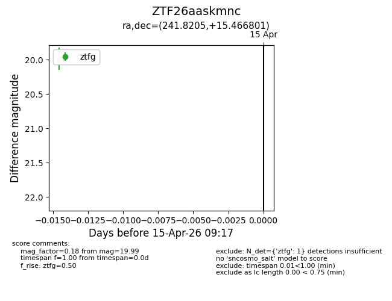
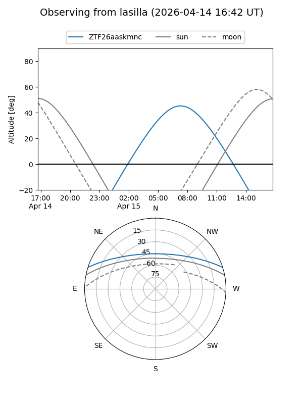
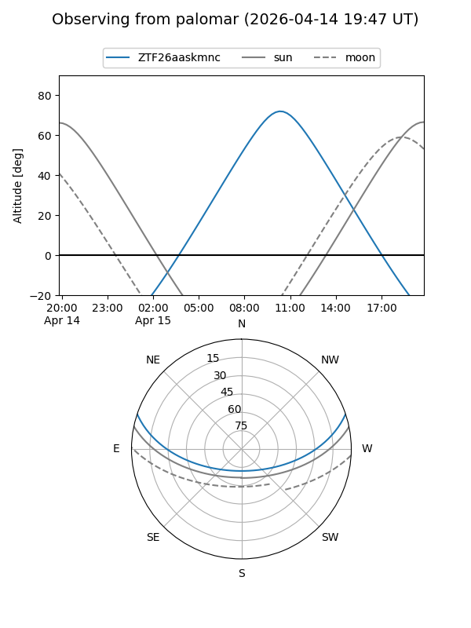

ZTF26aaskmnc
Target ZTF26aaskmnc at 2026-04-15 09:27
Aliases and brokers:
FINK: link
Lasair: link
ALeRCE: link
alt names
ZTF26aaskmnc (ztf,fink_ztf)
Coordinates:
equatorial (ra, dec) = 241.8205,+15.46680
equatorial (HMS+DMS) = 16:07:16.93,+15:28:00.48
galactic (l, b) = (28.9030,+43.21839)
Flags:
Photometry:
last ztfg=19.99
1 ztfg detections
Lightcurve

Visibility


Additional plots